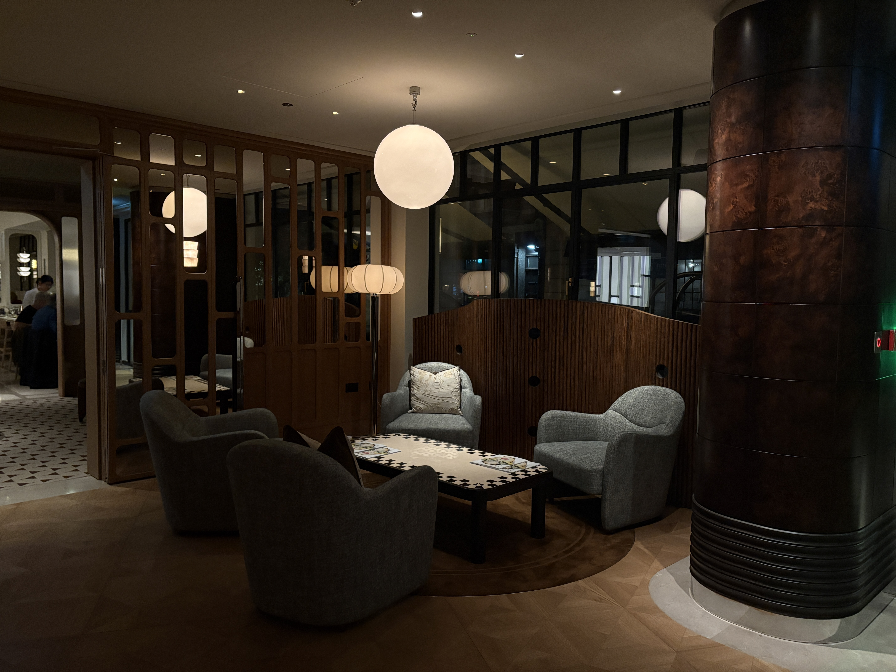
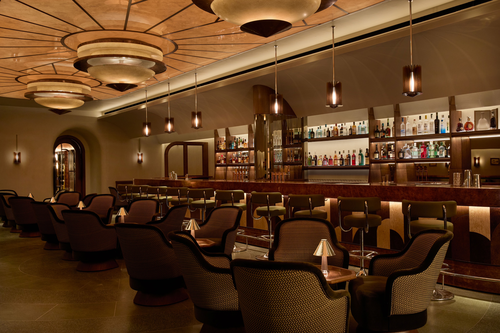
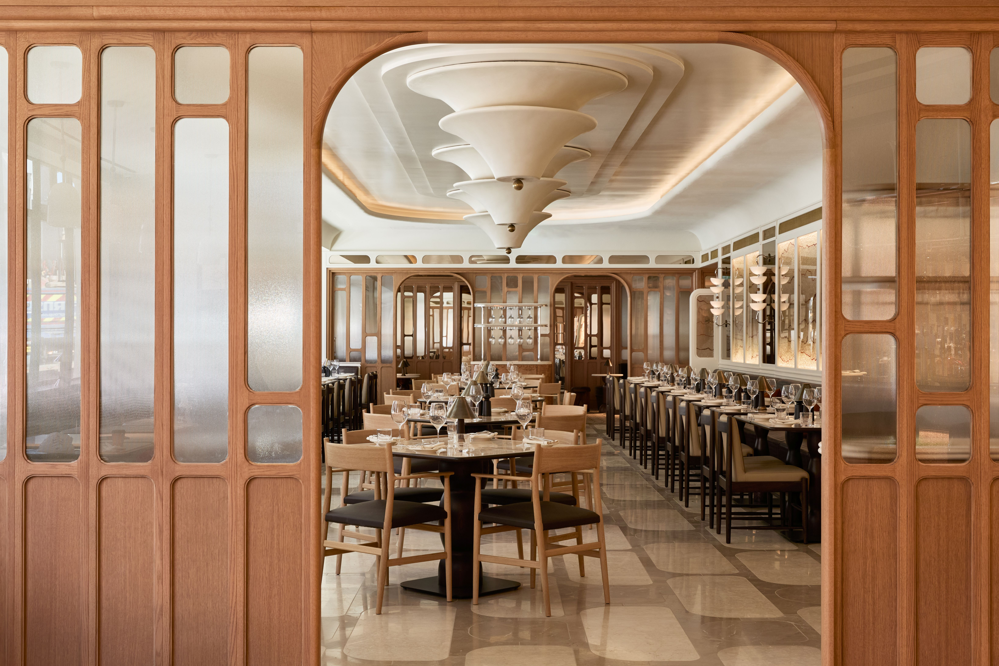

A new independent hotel opened on Newman Street in February. Eighty-one rooms, one debut hospitality group, and a brief built almost entirely around the neighbourhood it sits in.

The lobby, The Newman, 50 Newman Street, London W1T
Fitzrovia keeps its volume low. Soho is two streets to the south and audibly louder. Mayfair is fifteen minutes west and considerably more polished. Newman Street runs between Charlotte Street and Goodge Street, in the part of London that still carries a memory of being a 20th-century bohemian enclave. The Fitzroy Tavern, a few minutes’ walk away, used to draw Dylan Thomas, George Orwell and Aleister Crowley. The blue plaques are everywhere. The new hotel reads them all.
The Newman is the first project from Kinsfolk & Co, a British hospitality group launched by Paul Brackley after twenty years in luxury, most recently as general manager of Shangri-La The Shard. The proposition is hyperlocal and stubbornly independent. Eighty-one rooms, sixteen of them suites. No global signage at the door. The intention, made plain on opening, is a London hotel that sounds like London.
The interiors
London-based studio Lind + Almond ran the interiors. Pernille Lind and Richy Almond spent months reading Fitzrovia closely, walking the streets, working through the bibliography of Julian Maclaren-Ross. The base is Art Deco, sharpened with bespoke interventions throughout. Timber and deep wood tones lead. Polished stainless steel cuts through. Almost every piece of furniture in the building was made for it.
British writer, heiress and political activist Nancy Cunard becomes a recurring reference. Her stacked bangles reappear as sculptural headboards. Her geometric headwear is abstracted into plaster reliefs, rugs and carpets. Fifteen artists were commissioned to depict figures from the Fitzrovia of the 1920s through the 1950s, from illustrators Christopher Brown and Marcel Garbi to the painting duo Sandhills Studios. Rory Langdon-Down photographed the present-day neighbourhood in black and white. The two eras hang on the same walls.
It does not try to be a global brand. It is Fitzrovia, edited.
Léa FontaineBathroom tiling borrows from the Victorian glazed brick façade of the Gem Langham Court Hotel next door. Sink shapes are drawn from Shropshire House. Anatomé products line the counters. The palette holds steady through the building, which is the point. Nothing on the design floor demands attention. Everything holds it.
The room to book
The Penthouse is the headline. A 130-square-metre private terrace with a sauna and cold plunge, direct views toward the BT Tower, and a connecting door to a Deluxe Room when you need the second bedroom. Inside: a separate living room with a dining area, a kitchenette, a powder room, a master with dressing room, a dining table for eight. Swaledale stone in the bathroom. Furnishings by Louise Roe and 3 Dot Furniture. Textured paintings by Nadia Tuercke and Adriana Jaros in the living room. Anastasija Kulda above the bed.
If the Penthouse is unavailable, take any room with outdoor space. In summer, the terraces are why you stay on Newman Street and not Charlotte.
The Gambit Bar

The Gambit Bar, The Newman
A grand lacquered staircase runs from the lobby down to the Gambit Bar. The mood shifts. Fitzrovia’s darker edge surfaces here, and Lind + Almond’s design language with it. Curves give way to fractured geometry. Aleister Crowley appears in the carpet motifs and in the cocktail list, where the tequila-based Angels and Demons reads as a quiet wink. Percy Wyndham Lewis, who founded the Vorticist movement around the corner, echoes through the coffered ceiling.
Order the Kings and Queens. Whiskey, olive, sweet vermouth. The low copper tables develop a patina as drinks mark them, which is by design. Watercolours of Quentin Crisp by Freddie Darke and Georgie Bennett line the walls.
Brasserie Angelica

Brasserie Angelica, The Newman
The ground-floor restaurant runs from morning coffee through wine. The kitchen leans Northern European: pickled gravadlax with cucumber salad and mustard sauce, buttermilk-fried haddock with celeriac remoulade, the vocabulary of a brasserie reset slightly. A glass screen partially conceals the open kitchen. A leather banquette runs along the street-facing windows. Nils Jean’s illustrations of local characters hang above. The room is loud at lunch, quiet at five, and well-lit in a way that suggests the chef cares what you see.
The spa
The wellness floor draws on Swedish Grace. Layered fabrics, tactile finishes, tapestries by Christabel Balfour and Laura Vargas Llanas in the treatment rooms. The wet area is the unusual part. An experience shower, a hydrotherapy pool, sauna, steam, and an ice and salt room, the first in a London hotel. Pair an ultra-Swedish massage with twenty minutes in there afterwards. A workshop-style studio with a salt wall hosts daily Pilates, mindfulness and yoga. Locals can buy in, which keeps the room from feeling hotel-bound.
The verdict
A new hospitality group rarely arrives in London with this much conviction. The market is crowded; the global brands compete on amenity and on lobby. Two weeks after opening, the Newman already knew exactly what it was. The reference points are local. The artwork is commissioned. The building is in conversation with the houses on either side of it.
Stay on a high floor. Take the lacquered staircase down for a drink before dinner. Eat upstairs. Walk to the Fitzroy Tavern in the morning and look at the plaque. Fitzrovia is a small neighbourhood. The Newman is the right way in.
The Splendid Edit visited The Newman in spring 2026. Standard rooms from approximately £500 per night. The Penthouse on application. Book through thenewmanlondon.com.
Photography courtesy of The Newman, via Wallpaper*